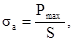

КОМПЛЕКС ПЕРСПЕКТИВНОГО РАЗВИТИЯ ГОРОДА
УПРАВЛЕНИЕ РАЗВИТИЯ ГЕНПЛАНА
МОССТРОЙЛИЦЕНЗИЯ
ВЕДОМСТВЕННЫЕ
СТРОИТЕЛЬНЫЕ НОРМЫ
ИНСТРУКЦИЯ
по
теплоизоляции стыков по контуру
оконных и дверных блоков наружных
стеновых панелей жилых и общественных
зданий методом напыления, однокомпонентной
пенополиуретановой системы
"Вилан-405"
ВСН 68-97
МОСКВА - 1998
Разработаны лабораторией тепло-звукоизоляции ГУП "НИИМосстроя" (зав. лабораторией к. т. н. И. А. Румянцева, вед. инженер Н. П. Дубровская) при участии Мосстройлицензии (Ю. И. Столяров, к. т. н. В. Д. Фельдман) по результатам лабораторных и производственных исследований технологии напыления однокомпонентной пенополиуретановой системы "Вилан-405" в стыки оконных и дверных блоков с учетом опыта применения разработанной технологии на Краснопресненском ЗЖБК и при строительстве жилых домов ОАО "ДСК-1, ОАО "Кунцевский комбинат ЖБИ-9", ОАО "ДСК-4", ОАО ДСК-2 и др.
Нормы предназначены для инженерно-технического персонала и рабочих, выполняющих работы по теплоизоляции стыков.
Ведомственные строительные нормы согласованы с МНИИТЭПом, АО ХК "Главмосстрой", КЗЖБК ОАО "ДСК-1", Центром Государственного санитарно-эпидемиологического надзора в г. Москве, ООО "Стройтеплоизоляция".
Замечания и предложения по содержанию ВСН направлять по адресу: 117192 Москва, Винницкая ул., д. 8, НИИМосстрой, лаборатория тепло-звукоизоляции.
|
Комплекс перспективного развития города |
Ведомственные строительные нормы |
ВСН 68-97 |
|
|
Инструкция по теплоизоляции стыков по контуру оконных и дверных блоков наружных стеновых панелей жилых и общественных зданий методом напыления однокомпонентной пенополиуретановой системы "Вилан-405" |
Вводятся впервые |
||
|
Управление развития Генплана |
|
||
|
Мосстройлицензия |
|
1.1. Инструкция распространяется на технологию напыления в заводских условиях однокомпонентной пенополиуретановой системы "Вилан-405" в стыки оконных и дверных блоков наружных стеновых панелей жилых и общественных зданий.
Настоящая инструкция является руководством при устройстве теплоизоляции стыков с целью сокращения потерь тепла через оконные и дверные проемы и поддержания в помещениях нормируемого тепловлажностного режима.
1.2. Теплоизоляция стыков Виланом-405 должна осуществляться в соответствии с рабочими чертежами узлов установки пластмассовых оконных и балконных блоков (рис. 1, 2, 3), разработанными проектной организацией и утвержденными в установленном порядке и настоящей инструкцией.
2.1. Вилан-405 - смесь компонента Вилан-А-405 М, полиизоционата и вспенивающего агента хладон-12, обеспечивающая получение полужесткого пенополиуретана на месте применения. На данный материал разработаны Технические условия "Система пенополиуретановая "Вилан-405" ТУ 2254-204-21081385-96" и получен Гигиенический сертификат № 19 МЦ.03.225.П.00362.Н7, выданный Госкомитетом санэпидемнадзора РФ в г. Москве 09.01.97 г.
|
Внесены НИИМосстроем |
Утверждены |
Срок введения в действие |
2.2. Вилан-405 представляет собой жидкую, вязкую, реакционно-способную смесь, вспенивающуюся при выходе из баллона и отверждающуюся влагой воздуха в течение не более трех часов.
Отвержденный материал покрывается технологической коркой.
2.3. Поставка Вилан-405 на отделочные конвейеры завода производится в специальных пятилитровых газовых баллонах по ГОСТ 15860, рассчитанных на давление 1,6 МПа (16 кгс/см2).
2.4. Гарантийный срок хранения системы "Вилан-405" не более трех месяцев с момента изготовления. В дальнейшем происходит нарастание вязкости системы, что затрудняет ее переработку. При более длительном хранении может произойти ее полная полимеризация, что приводит к негодности баллонов.
После шести месяцев работы с баллонами необходима промывка их метиленхлоридом.
3.1. При теплоизоляции стыков напылением системы "Вилан-405" по контуру оконных и дверных блоков должны выполняться требования ТУ 2254-204-21081385-96 "Система пенополиуретановая "Вилан-405".
3.2. По своим свойствам система "Вилан-405" должна соответствовать требованиям, указанным в табл. 1.
Таблица 1
|
Нормативные значения |
Метод испытания |
|
|
Испытание по технологической пробе: |
по п. 6.1. настоящей инструкции |
|
|
время образования технологической корочки, мин, не более |
20 |
|
|
время полного отверждения, ч, не более |
3 |
3.3. Физико-механические и теплотехнические показатели пенополиуретановой теплоизоляции из Вилана-405 должны соответствовать нормам, приведенным в табл. 2.
Таблица 2
|
Нормативные требования |
Метод испытаний |
|
|
Внешний вид |
Полужесткая ячеистая пластмасса от белого до светло-коричневого цвета с незначительным количеством раковин размером не более 5 мм |
по п. 6.2. настоящей инструкции |
|
Кажущаяся плотность, кг/м3 |
25 - 45 |
по п. 6.3. ГОСТ 409-77* |
|
Разрушающее напряжение при сжатии, МПа (кгс/см2), не менее |
0,08 (0,8) |
по п. 6.4. ГОСТ 23206-78* |
|
Разрушающее напряжение при растяжении, МПа (кгс/см2), не менее |
0,11 (1,1) |
по п. 6.5. ГОСТ 17370-71* |
|
Адгезионная прочность к бетону, МПа (кгс/см2) |
0,12 (1,2) разрыв когезионный |
по п. 6.6. Методика АО "Полимерсинтез" |
|
Теплопроводность, Вт/м×К, не более |
0,035 |
по п. 6.7. ГОСТ 7076-87 |
3.4. Теплоизоляция стыков оконных и дверных блоков наружных стеновых панелей зданий соответствует нормативным требованиям, если ее фактические (измеренные) показатели соответствуют величинам, приведенным в табл. 1 и 2 настоящей инструкции.
3.5. Физико-механические показатели определяются на контрольных образцах, получаемых непосредственно перед теплоизоляцией стыков путем выпуска системы "Вилан-405" из баллона.
4.1. Технологический процесс теплоизоляции стыков оконных и дверных блоков пенополиуретаном Вилан-405 в заводских условиях состоит из следующих основных стадий:
- заправка баллонов пенополиуретановой системой;
- встряхивание баллонов;
- проверка первых порций напыляемой композиции;
- заполнение Виланом-405 стыков путем напыления в них пенополиуретановой системы;
- установка пластмассового либо деревянного наличника с внутренней стороны стыка;
- промывка сопла, шлангов и шарового вентиля метиленхлоридом.
4.2. Напыление Вилана-405 производится на отделочных конвейерах из специальных баллонов. Баллоны снабжены шлангами с имеющимися на них шаровыми вентилями и соплами для нанесения пенопласта. Шланги устанавливаются на баллоны.
4.3. Перед началом работы баллон встряхивают в течение 1 - 2 минут. После установки шланга баллон переворачивают в положение "дном верх" и открывают шаровой вентиль на баллоне. Шаровой вентиль на конце шланга должен быть в этот момент закрыт.
4.4. Первые порции вспененной композиции наносят для проверки на подложку. Убедившись, что масса, выходящая из насадки сопла, однородна и равномерно вспенивается, приступают к заполнению стыков.
Заполнение стыка Виланом-405 производят после установки в панель оконного (дверного) блока и закрепления его с внутренней стороны панели.
4.5. Сопло, через которое производят подачу Вилан-405, вставляют в заделываемый стык, открывают шаровой вентиль на конце шланга и, ведя его с равномерной скоростью, заполняют стык. Скорость движения сопла вдоль стыка подбирает оператор.
Смесь вспенивается, заполняет стык и адгезирует к формующим стык поверхностям стеновой панели и оконного (дверного) блока, которые должны быть сухими.
4.6. Заполнение стыка производят не менее чем на 1/3 его объема в летний период и чуть более чем 1/2 - в зимний период. Расширяясь (вспениваясь), Вилан-405 заполняет любые, даже незначительные зазоры и высыхает в течение 1 - 3 часов под воздействием влаги воздуха.
Объем заполнения стыка в значительной степени зависит от качества исходной композиционной системы и температуры помещения, в котором производится нанесение системы. При длительном хранении баллонов и снижении кратности вспенивания композиции возможно заполнение стыка на 2/3 его объема. После заполнения полости с внутренней стороны стыка прибивается наличник.
4.7. Для качественной заделки стыка необходимо обеспечить равномерное заполнение стыка Виланом-405 на всю глубину. Допускается оставлять незаполненным зазор в стыке, если его глубина со стороны наличника не превышает 15 мм. Для предотвращения выхода пенопласта с наружной стороны стыка оконного (дверного) блока напыление Вилана-405 необходимо производить после проверки соответствия величины зазора (с наружной стороны) между стеновой панелью и блоком требуемым размерам. Величина зазора должна быть не более 2 мм.
При толщине зазора более 2 мм стык до проведения работ по напылению Вилана обрабатывается с наружной стороны мастикой бутэпрол и зачеканивается раствором.
4.8. Образующаяся при нанесении пенопласта технологическая корка значительно улучшает его эксплуатационные качества, особенно его гидроизоляционные свойства, и препятствует проникновению влаги в утеплитель.
В связи с этим не рекомендуется выводить пенопласт за наружную полость стыка и обрезать его. Необходимо обеспечить сохранность поверхностного защитного слоя с наружной стороны стыка.
Узлы установки пластмассовых оконных и дверных блоков (производства КЗЖБК ОАО "ДСК-1")
Рис. 1
а) общий вид; б) сечение I-I;
1 - стеклопакет; 2 - пластмассовый оконный блок; 3 - слив из оцинкованной стали; 4 - Вилан-405; 5 - плита подоконная; 6 - цементный раствор; 7 - наличник наружный
Рис. 2
в) сечение II-II
1 - стеклопакет; 2 - наличник; 3 - пластмассовый балконный блок; 4 - пластмассовый оконный блок; 5 - Вилан-405
Рис. 3
г) сечение III-III; д) сечение IV-IV
1 - Вилан-405; 2 - пластмассовый балконный блок; 3 - наличник
4.9. После использования баллона с системой "Вилан-405" необходимо промыть вентили и сопло метиленхлоридом.
5.1. Для обеспечения удовлетворительного качества теплоизоляции стыков следует систематически осуществлять пооперационный входной контроль исходной композиции. Систему "Вилан-405", не удовлетворяющую требованиям ТУ 2254-204-21081385-96 "Система пенополиуретановая "Вилан-405", представленным в табл. 1 и 2, возвращают поставщику. Использование для заделки стыков композиции, не соответствующей нормативным требованиям, не допускается.
5.2. Контроль качества теплоизоляции стыков напыленным Виланом-405 проводят по следующим показателям: степень заполнения стыка пенопластом, его внешний вид и плотность, отсутствие выхода пенопласта за наружную поверхность стыка.
5.3. Степень заполнения стыка проверяют на каждом участке после напыления. Допускаемая толщина зазора между Виланом-405 и наличником не должна превышать 10 мм.
5.4. Внешний вид заполненного Виланом-405 стыка проверяют визуально, обращая внимание на возможность появления во вспененном пенопласте следующих дефектов: отсутствие адгезии, наличие на пенопласте липких мест и усадки, стекание пеномассы при напылении, образование мягкого и хрупкого пенопласта, наличие открытой пористости, образование зернистой поверхности и трещин.
5.5. Дефекты, нарушающие целостность теплоизоляции и снижающие ее качество, следует обязательно устранить. Пенопласт удаляют с дефектных мест и снова напыляют пенополиуретановую систему.
6.1. Испытание по технологической пробе.
6.1.1. Проведение испытания.
Испытания проводят в вытяжном шкафу при температуре 20 - 30 °С. Деревянную форму предварительно выкладывают внутри фильтровальной бумагой, затем заполняют на высоту 1,0 - 1,5 см от дна вспененным пенополиуретаном из отобранного для испытаний баллона. В момент выхода пены из баллона замечают время. Через каждые 3 - 5 мин кончиком стеклянной палочки или металлического щупа прикасаются к поверхности пены. Момент, когда при прикосновении палочки (щупа) не образуются тянущиеся нити, считается временем образования поверхностной корочки.
По истечении 1 ч и далее через каждые 20 - 30 мин проверяют полноту отверждения пенополиуретана путем погружения палочки (щупа) до дна формы. Тот момент, когда на палочке (щупе) не обнаружится следов жидкого материала, является временем полного отверждения.
6.2. Внешний вид определяют путем визуального осмотра среза образца. Размер раковин измеряют линейкой (ГОСТ 427).
6.3. Кажущуюся плотность определяют по ГОСТ 409.
В качестве образцов используют кубики размером 50,0 (±0,5) мм.
Измерительный прибор-штангенциркуль по ГОСТ 166.
Количество образцов для испытаний - 5.
6.4. Разрушающее напряжение при сжатии определяют по ГОСТ 23206.
В качестве образцов используют кубики размером 50,0 (±0,5) мм.
Измерительный прибор-штангенциркуль по ГОСТ 166.
Количество образцов для испытаний - 5.
6.5. Разрушающее напряжение при растяжении определяют по ГОСТ 17370.
В качестве образцов используют лопаточки размером 10 ´ 25 (±0,2) мм.
Измерительный инструмент-штангенциркуль по ГОСТ 166.
Количество образцов для испытаний - 5.
6.6. Адгезионная прочность к бетону определяется по методике АО "Полимерсинтез" "Методы физико-механических испытаний пенопластов", "Метод определения адгезии жестких пенопластов к конструкционным материалам".
Метод предназначен для оценки прочности адгезионной связи пенополиуретана с металлами, полимерами, деревом и другими конструкционными материалами. Сущность метода заключается в определении максимального усилия и последующего расчета продольного напряжения, требуемого для разрушения связи между пенополиуретаном и конструкционным материалом при действии растягивающих сил, нормальных к плоскости контакта материалов.
6.6.1. В качестве аппаратуры для испытаний используется любая испытательная машина, позволяющая проводить испытание при постоянной скорости раздвижения захватов и обеспечивающая измерение усилия при растяжении с точностью до 1 % от измеряемой величины.
6.6.2. Испытание образцов проводится в специальном приспособлении, установленном в зажимах испытательной машины. Приспособление должно обеспечить строгое совпадение продольной оси испытуемого образца с направлением прилагаемого усилия.
6.6.3. Образцы для испытаний в зависимости от технологии получения пенополиуретана приготавливают следующим образом:
для определения адгезии пенополиуретанов, получаемых методом напыления, образцы приготавливают путем напыления композиции в металлическую коробку, в днище которой укреплены диски из конструкционного материала. После вспенивания и отверждения с помощью механической обработки пенополиуретан доводится по диаметру до размеров диска 50 (±0,5) мм, а по высоте до 30 (±1) мм. Допускается использование вместо дисков прямоугольников с размером (50 ´ 50 ´ 30) ± 0,5 мм. Полученные таким образом образцы попарно склеиваются эпоксидным клеем.
Перед вспениванием внутренние стенки металлической коробки смазывают смазкой Циатим-221. Для склейки рекомендуется смола ЭД-5 с политиленполиамином в качестве отвердителя в соотношении 10 : 1.
Для испытания используется не менее пяти образцов.
6.6.4. Для проведения испытаний образец устанавливают с помощью приспособления в зажимах машины.
6.6.5. Испытание проводят при температуре 20 (±2) °С и при скорости движения захватов машины 10 (±1) мм/мин.
6.6.6. Растяжение проводят до разрушения или отслаивания образца и при этом фиксируют наибольшую нагрузку, достигнутую при испытании.
6.6.7. Обе части испытанного образца подвергают визуальному осмотру для определения характера разрушения (по пенополиуретану, адгезионному шву или смешанного характера).
6.6.8. При обработке результатов прочность связи пенополиуретана с конструкционным материалом (sа) в кгс/см2 вычисляют по формуле:

где Рmax - максимальное усилие при отрыве или разрушении образца, кгс;
S - площадь поперечного сечения образца, см2.
За результат испытаний принимают среднее арифметическое всех параллельных определений.
6.7. Теплопроводность определяют по ГОСТ 7076.
В качестве образцов используют бруски размером (200 ± 1) ´ (200 ± 1) ´ (25 ± 1) мм.
Измерительный инструмент-штангенциркуль по ГОСТ 166.
Количество образцов для испытаний - 3.
7.1. Система "Вилан-405" представляет собой вязкую токсичную горючую жидкость. Под влиянием влаги воздуха происходит реакция полимеризации с образованием нетоксичного полимера - пенополиуретана. При производстве работ по заделке стыков пенополиуретаном "Вилан-405" должны строго соблюдаться требования СНиП III-4-80* "Техника безопасности в строительстве", "Правил пожарной безопасности при производстве строительно-монтажных работ", утвержденных ГУПО МВД СССР от 26.12.96 г., настоящей инструкции.
7.2. При подготовке исходных компонентов, заполнении баллонов и напылении Вилана должны быть предусмотрены меры, обеспечивающие безопасные условия труда, т. к. эти процессы могут сопровождаться загрязнением воздуха за счет испарения токсичных веществ.
7.3. Работы по заполнению Виланом-405 баллонов должны производиться в отдельном помещении, оборудованном эффективной приточно-вытяжной вентиляцией, обеспечивающей содержание вредных веществ, выделяющихся в воздушную среду в ходе технологического процесса, в пределах ПДК.
7.4. Работы по заделке стыков оконных и дверных блоков пенополиуретаном "Вилан-405" производят на отделочных конвейерах, снабженных местной вытяжной вентиляцией.
7.5. К работам по заполнению баллонов исходными компонентами и нанесению Вилана-405 допускают лиц, достигших 18-летнего возраста, прошедших инструктаж по технике безопасности и ознакомленных с санитарными требованиями и с основными свойствами пенопласта, а также с мерами пожарной безопасности.
7.6. Все работающие должны быть обеспечены хлопчатобумажной спецодеждой, защитными очками и резиновыми перчатками (тип 1 по ГОСТ 20010-74).
7.6.1. При попадании пенополиуретана в глаза они должны быть немедленно промыты водой или 1 - 3 % раствором поваренной соли.
7.6.2. Запрещается прием пищи и курение в производственных помещениях и на участках хранения компонентов.
7.6.3. Перед курением и приемом пищи необходимо тщательно мыть руки теплой водой с мылом.
7.7. Производственные помещения должны быть обеспечены противопожарным оборудованием и средствами пожаротушения.
При горении системы выделяются токсичные вещества, поэтому при возникновении пожара пламя необходимо тушить водой, обязательно применяя при этом противогазы фильтрующие марки БКФ или изолирующие, т. к. при горении и разложении пенополиуретана выделяются хлор- и фосфорсодержащие соединения, окись углерода, пары изоциантов, цианистый водород и другие токсичные пары и газы.
7.8. Отходы пенополиуретана категорически запрещается сжигать, их отправляют на повторное использование в строительстве.
7.9. Запрещается вскрывать баллоны.
|
1. ТУ 2254-204-21081385-96 |
Система пенополиуретановая "Вилан-405" |
|
2. ГОСТ 409-77* |
Пластмассы ячеистые и резины губчатые. Метод определения кажущейся плотности |
|
3. ГОСТ 23206-78* |
Пластмассы ячеистые жесткие. Метод испытания на сжатие |
|
4. ГОСТ 17370-71* |
Пластмассы ячеистые жесткие. Метод испытания на растяжение |
|
5. ГОСТ 7076-87 |
Материалы и изделия строительные. Метод определения теплопроводности |
|
6. СНиП III-4-80* |
Техника безопасности в строительстве |
|
Перчатки резиновые технические. Технические условия. |
|
|
Баллоны стальные, сварные для сжиженных газов на давление 1,6 МПа. Технические условия |
|
|
9. ГОСТ 427-75 |
Линейки измерительные металлические. Технические условия |
|
10. ГОСТ 166-89 |
Штангенциркули. Технические условия. |
СОДЕРЖАНИЕ
|
2. Однокомпонентная пенополиуретановая система "Вилан-405". 1 3. Технические требования к теплоизоляции из Вилана-405. 2 5. Контроль качества заделки стыков системой "Вилан-405". 5 |